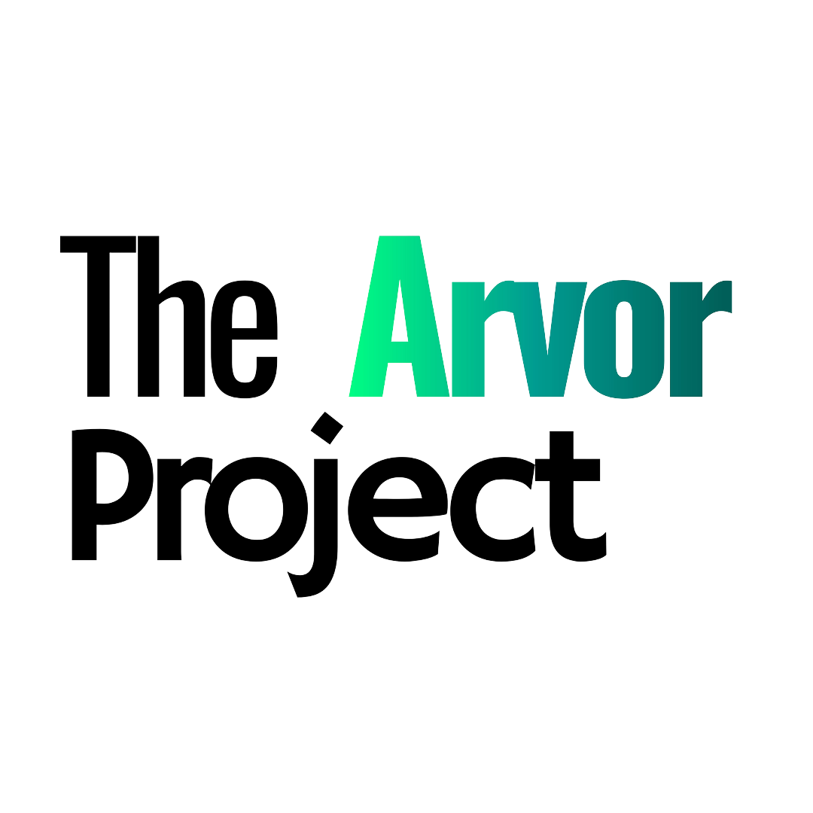
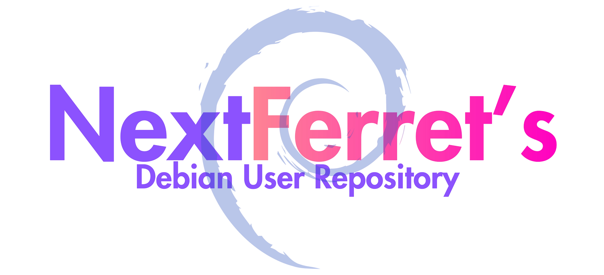

Open Source Tools.
Built for the Future.
We are NextFerret. An organization dedicated to building accessible, reliable, and community-powered software.
Projects

Arvor Linux
Atomicity, but not immutability. A modern Linux distribution built from the ground up with a unique approach to system management — giving you the reliability of atomic updates without sacrificing flexibility.

NFDUR
NextFerret's Debian User Repository. A curated collection of packages maintained by the community, making it easy to install and keep up-to-date software that isn't available in the official Debian repositories.
Mission
Open by Default
Every line of code we write is open source. Transparency isn't a feature — it's our foundation.
Community First
We build for the people who use it. Contributions, feedback, and ideas from the community shape everything we do.
Simple by Design
Complex problems don't need complex solutions. We strive for elegance, clarity, and approachability in every tool.
Want to Contribute?
Whether you code, design, write docs, or just have ideas — there's a place for you. Every contribution moves us forward.